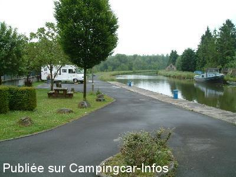
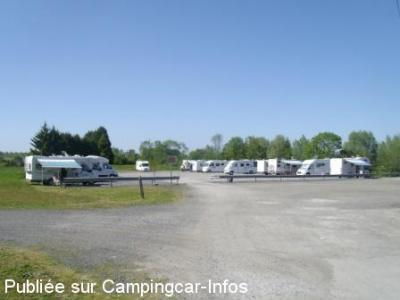
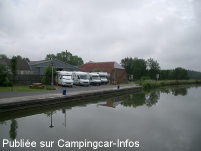

ASN = Aire de services avec stationnement nuit possible de :
CATILLON SUR SAMBRE
(N° 641)
Accès/adresse :
Avenue de la Groise, N43
59360 CATILLON SUR SAMBRE
59360 CATILLON SUR SAMBRE
Latitude : (Nord) 50.07625° Décimaux ou 50° 4′ 34′′
Longitude : (Est) 3.64606° Décimaux ou 3° 38′ 45′′
Tarif : 2014
Stationnement, électricité : 5 €
Type de borne : Artisanale
Services :


Autres informations :
3 emplacements
Stationnement limité 72 H
Autre parking : passer le pont, 300 m à droite

Le 10/07/2014 par Brian Ramsden

Le 11/04/2011 par RO et CLOCLO 62

Le 17/08/2004 par Beunon Daniel
de
clau
le 13/05/2014 :
Le 10/05/2014, parking avec 4 CC le long du quai mais grand espace le long du canal et très calme car en dehors de la route. Terrain goudronné mais avec de nombreux trous. Nombreuses poubelles. Il faut vidanger près de l'autre aire.
Le 10/05/2014, parking avec 4 CC le long du quai mais grand espace le long du canal et très calme car en dehors de la route. Terrain goudronné mais avec de nombreux trous. Nombreuses poubelles. Il faut vidanger près de l'autre aire.
de
jeannot 89
le 22/09/2011 :
5 places avec vidange et borne à eau et electricité pour 5 euros les 72 HEURES. de plus il y a un 2eme parking en face (rue de la gare) pour dépannage quand le 1er parking est plein. magasin d'alimentation à 900m. note 7/10
5 places avec vidange et borne à eau et electricité pour 5 euros les 72 HEURES. de plus il y a un 2eme parking en face (rue de la gare) pour dépannage quand le 1er parking est plein. magasin d'alimentation à 900m. note 7/10
de
oldWomble
le 08/06/2011 :
Nice aire but the bridge is now very worn and so noisy when traffic passes over it. You will get a much quieter night in the car park almost opposite
Nice aire but the bridge is now very worn and so noisy when traffic passes over it. You will get a much quieter night in the car park almost opposite
de
ROBERT GOFFIN
le 11/04/2011 :
Salut à tous
bon je vais réguliérement à CATILLON sur Sambre , bravo à la mairie pour tous les efforts qui sont fait pour accueillir les camping cariste.
Le marchand de frite (au pont)est simpatique et pas trop cher.
Il y a une pizzeria pas loin (au moins le vélo) c'est bien aussi.
La petite superette c'est bien utile.
Et j'ai contaté que la mairie entretenait le parking de l'autre coté du pont
"pas ou les amateurs de courant gratuit qui se précipite malgres le bruit de la route? et du pont? et n'en bouge plus !!! "
Mais .... regardez bien juste avant le pont il y a un immence parking !!!
On peut faire son eau, ses vidanges au pont à l'aire de service et revenir se replacer sur ce grand parking... gratuit( merci la MAIRIE).
Possibilité de pêche dans la sambre , il y a du poisson c'est sur.
De belles ballades au bord de la Sambre le chemin de hallage est bien entretenu.
Il y a un circuit de quad et moto à quelque centaines de mêtre mais il ne commence pas avant 10h00 et finissent à 17h00 c'est pas génant ET PARFOIS simpa à regarder.
salut RO et CLOCLO du 62
Salut à tous
bon je vais réguliérement à CATILLON sur Sambre , bravo à la mairie pour tous les efforts qui sont fait pour accueillir les camping cariste.
Le marchand de frite (au pont)est simpatique et pas trop cher.
Il y a une pizzeria pas loin (au moins le vélo) c'est bien aussi.
La petite superette c'est bien utile.
Et j'ai contaté que la mairie entretenait le parking de l'autre coté du pont
"pas ou les amateurs de courant gratuit qui se précipite malgres le bruit de la route? et du pont? et n'en bouge plus !!! "
Mais .... regardez bien juste avant le pont il y a un immence parking !!!
On peut faire son eau, ses vidanges au pont à l'aire de service et revenir se replacer sur ce grand parking... gratuit( merci la MAIRIE).
Possibilité de pêche dans la sambre , il y a du poisson c'est sur.
De belles ballades au bord de la Sambre le chemin de hallage est bien entretenu.
Il y a un circuit de quad et moto à quelque centaines de mêtre mais il ne commence pas avant 10h00 et finissent à 17h00 c'est pas génant ET PARFOIS simpa à regarder.
salut RO et CLOCLO du 62
de
le chalet o pizzas
le 02/07/2010 :
amis camping caristes prochainement ouverture d une pizzeria a cote du grand batiment bleu dans le virage avenue de la groise catillon sur sambre tarifs interressaant pour vous merci a bientot
amis camping caristes prochainement ouverture d une pizzeria a cote du grand batiment bleu dans le virage avenue de la groise catillon sur sambre tarifs interressaant pour vous merci a bientot
de
jean pierre et nicole
le 02/05/2010 :
Bjr,venons de passer le week-end du 1er mai sur le grand parking a 300M de l'aire car pas de place,endroit très calme au bord de l'eau seul souci le week end,terrain de motocross a proximité!nouvelle barraque a frite a 3mn a pieds(delicieuses);Nous y retournerons pêcher et se reposer.Merci a la municipalité
Bjr,venons de passer le week-end du 1er mai sur le grand parking a 300M de l'aire car pas de place,endroit très calme au bord de l'eau seul souci le week end,terrain de motocross a proximité!nouvelle barraque a frite a 3mn a pieds(delicieuses);Nous y retournerons pêcher et se reposer.Merci a la municipalité
de
JIP56
le 22/04/2010 :
Nous avons trouvé cette aire dans un 2ème temps, car en arrivant, nous avons été orientés sur un grand parking à bus et identifié également pour camping-cars. C'est en nous promenant en bordure du canal que nous avons vu l'aire communale.
Merci à cette municipalité pour l'effort consenti.
PS : il n'y a plus de boulanger dans le village comme cela est toujours mentionné sur le plan.
Nous avons trouvé cette aire dans un 2ème temps, car en arrivant, nous avons été orientés sur un grand parking à bus et identifié également pour camping-cars. C'est en nous promenant en bordure du canal que nous avons vu l'aire communale.
Merci à cette municipalité pour l'effort consenti.
PS : il n'y a plus de boulanger dans le village comme cela est toujours mentionné sur le plan.
de
jean-marie
le 26/06/2009 :
Nous avons passé le dernier week-end sur l'aire de Catillon sur Sambre et le règlement vient de changer : suite à des abus, le stationnement est autorisé 72 heures. Avant, il était illimité. En plus, un représentant de la commune nous a dit que bientôt il faudra payer l'eau et l'électricité. Toujours à cause de gens qui ne respectent rien.
Pour notre part, nous continuerons à aller à la pêche.
A bientôt.
Nous avons passé le dernier week-end sur l'aire de Catillon sur Sambre et le règlement vient de changer : suite à des abus, le stationnement est autorisé 72 heures. Avant, il était illimité. En plus, un représentant de la commune nous a dit que bientôt il faudra payer l'eau et l'électricité. Toujours à cause de gens qui ne respectent rien.
Pour notre part, nous continuerons à aller à la pêche.
A bientôt.
de
DENYS02
le 13/03/2009 :
Bonjour. Attention, l'hiver l'eau est fermée sur les bornes, vidanges pas très pratiques, mais elle a le mérite d'exister. A+
Bonjour. Attention, l'hiver l'eau est fermée sur les bornes, vidanges pas très pratiques, mais elle a le mérite d'exister. A+
de
Rodger and Janice Deane
le 16/09/2008 :
We spent a very pleasant evening here in May 2008. Superb, quiet location (except during the day) Apart from the bar, we could not find any shops. Many thanks to the Town Council for the facilities.
We spent a very pleasant evening here in May 2008. Superb, quiet location (except during the day) Apart from the bar, we could not find any shops. Many thanks to the Town Council for the facilities.
de
Looping
le 15/04/2008 :
Attention, l'aire est en deux parties. L'une se situe près du pont levant et c'est là qu'on trouve les services. Si l'aire est remplie, une autre partie très grande se trouve à 300 m. Passez le pont en direction du village, à environ 300 m à droite vous verrez une petite rue qui conduit à une aire reservée aux CC et camions.
Si ce n'est pas très beau, cela a au moins le mérite d'être très calme et de disposer de nombreuses places.
Attention, l'aire est en deux parties. L'une se situe près du pont levant et c'est là qu'on trouve les services. Si l'aire est remplie, une autre partie très grande se trouve à 300 m. Passez le pont en direction du village, à environ 300 m à droite vous verrez une petite rue qui conduit à une aire reservée aux CC et camions.
Si ce n'est pas très beau, cela a au moins le mérite d'être très calme et de disposer de nombreuses places.